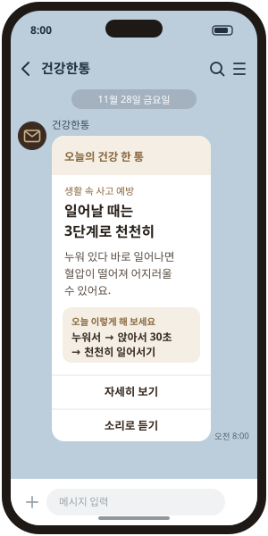
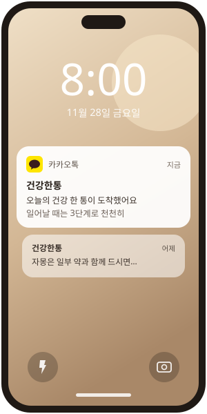
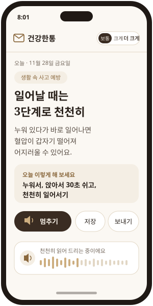
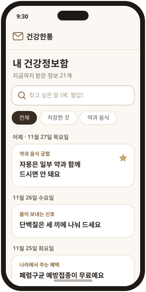

일어날 때는 3단계로 천천히
누워 있다가 바로 일어나면 혈압이 갑자기 떨어져 어지러울 수 있어요. 어르신 낙상이 자주 생기는 순간이에요.
오늘 이렇게 해 보세요
누워서, 앉아서 30초 쉬고, 천천히 일어서기
나라 기관의 공식 자료로 만든 건강 정보를 하루 한 가지씩, 쉬운 말로 보내 드려요. 누구나 아는 뻔한 이야기는 빼고, 모르고 지나치기 쉬운 것만 골랐어요.

앱을 따로 설치하실 필요가 없어요. 매일 쓰시는 카카오톡으로 받아요.

휴대폰에 ‘건강한통’ 알림이 뜹니다. 받는 시간은 아침 7시, 8시, 9시 가운데 고르실 수 있어요.

세 줄이면 다 읽는 짧은 글이에요. 글씨 읽기가 힘드시면 ‘소리로 듣기’를 누르세요. 천천히 읽어 드려요.

놓친 날이 있어도 괜찮아요. 홈페이지의 내 건강정보함에서 날짜별로 다시 보실 수 있어요.
카카오톡을 쓰지 않으셔도 괜찮아요. 가입할 때 ‘문자로 받기’를 고르시면 같은 내용을 문자로 보내 드려요.
인터넷과 유튜브에도 건강 정보는 많아요. 하지만 무엇이 맞는지, 나에게 필요한지 가려내기는 쉽지 않죠. 건강한통은 나라 기관의 공식 자료에서 골라, 쉬운 말로 풀어, 오늘 할 일 하나로 정리해 드려요.
여섯 가지 주제를 번갈아 가며 보내 드려요. 읽고 나서 오늘 바로 해 볼 수 있는 내용만 골랐어요.
이런 이야기는 보내지 않아요
드시는 약과 같이 먹으면 안 되는 음식, 조심해야 할 조합
먹는 시간, 함께 먹으면 흡수가 안 되는 조합
나이 들며 생기는 변화와, 그때 해 볼 수 있는 관리법
낙상, 갑작스러운 추위와 더위처럼 집 안팎의 위험
무료 예방접종, 검진, 지원 제도처럼 몰라서 놓치는 혜택
청력, 시력, 기억력을 지키는 생활 습관
요일을 눌러 보세요. 실제로 이런 모습으로 도착해요.
누워 있다가 바로 일어나면 혈압이 갑자기 떨어져 어지러울 수 있어요. 어르신 낙상이 자주 생기는 순간이에요.
누워서, 앉아서 30초 쉬고, 천천히 일어서기
가입하시면 그동안 받은 정보를 홈페이지에서 언제든 다시 보실 수 있어요. 병원 가기 전에 한 번 훑어보시기에도 좋아요.
화면마다 질문이 하나씩 나와요. 비밀번호도 필요 없으니 천천히 따라 하시면 돼요.
비밀번호를 만들 필요가 없어요. 카카오톡을 안 쓰시면 휴대폰 번호로 가입하시면 돼요.
혈압, 당뇨, 관절처럼 신경 쓰이는 곳을 고르시면 그에 맞는 정보를 더 자주 보내 드려요.
아침 7시, 8시, 9시 가운데 편한 시간을 고르시면 다음 날 아침부터 도착해요.
매일 아침 건강 정보는 계속 무료예요. 건강 상담과 더 자세한 맞춤 정보가 필요하실 때만 멤버십을 시작하세요.
매일 아침 건강 습관을 시작하는 분께. 가입비도, 숨은 요금도 없어요.
무료 혜택은 모두 그대로, 여기에 더해
결제 3일 전에 미리 알려 드려요 · 해지는 버튼 하나로, 위약금 없이
갑자기 가슴이 아프거나, 말이 어눌해지거나, 한쪽 팔다리에 힘이 빠지면 상담 대신 바로 119에 전화하세요.
오늘 이렇게 해 보세요
이럴 땐 꼭 병원에 가세요
건강 정보는 믿을 수 있어야 하니까요. 한 통이 도착하기까지 네 단계를 거쳐요.
식품의약품안전처, 기상청, 한국환경공단, 행정안전부가 공개한 공식 자료를 바탕으로 써요.
어려운 말은 풀고, 세 줄 안에 읽히도록 줄여요. 오늘 해 볼 일 하나를 꼭 넣어요.
쉽게 고쳐 쓰면서 원래 자료와 뜻이 달라지지 않았는지 확인하고 보내요. 효과를 부풀리는 말은 빼요.
한파가 오는 날엔 추위 대비 정보처럼, 그날 꼭 필요한 정보를 먼저 보내요.
아니요. 카카오 계정이나 휴대폰 번호로 가입하셔서 외우실 비밀번호가 없어요. 다음에도 같은 방법으로 누르시면 바로 들어가져요.
카카오톡만 쓰실 줄 알면 돼요. 가입도 화면마다 질문이 하나씩이라 천천히 따라 하시면 돼요. 글씨가 작으면 오른쪽 위 ‘글자 크기’를 눌러 더 큰 글씨를 고르세요.
네. 휴대폰 번호로 가입하신 뒤 ‘문자로 받기’를 고르시면 같은 내용을 문자로 보내 드려요.
네, 매일 아침 건강 정보와 내 건강정보함은 무료예요. 건강 상담과 맞춤 정보가 필요하실 때만 멤버십(월 3,900원)을 시작하시면 돼요.
아니요. 건강한통은 생활 속 건강 관리 정보를 드리는 서비스예요. 병명을 판단하거나 약을 처방하지 않아요. 진료가 필요해 보이면 병원에 가시도록 안내해 드려요.
내 건강정보함의 ‘내 설정’에서 버튼 하나로 잠시 멈추거나, 탈퇴해서 그만 받으실 수 있어요. 멤버십 해지도 같은 곳에서 하시면 되고, 위약금은 없어요.
가입비 없이, 1분이면 시작할 수 있어요.
무료로 시작하기 내 건강정보함 보기